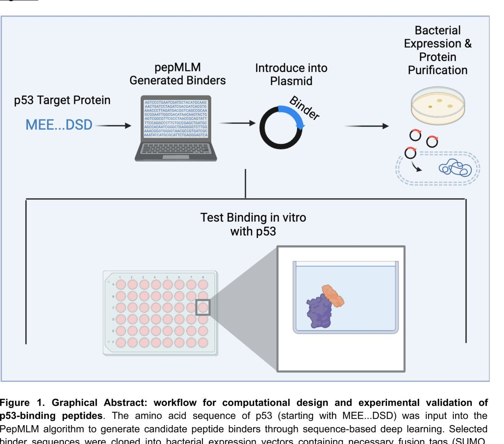
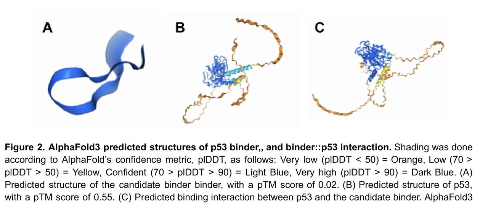

Home Featured work p53 peptide binders
04 · AI to wet lab
An AI-designed peptide that did not bind
p53 is the most frequently mutated gene in human cancer and one of the hardest to drug, because it has no stable structure to design against. A sequence model gave us 200 candidate peptides. We synthesized the top one and tested it against real p53. It did not bind significantly, and the abstract says so.
- Timeline
- Jan – May 2025
- Context
- Duke BME305L with the Chatterjee Lab
- Team
- 8 authors, 4 marked equal contributors
- My role
- Co-first author. Purification, biotinylation, ELISA, figures, conclusions
- Tools
- PepMLM, AlphaFold3, E. coli expression, Ni-NTA purification, ELISA, t-test
- Headline outcome
- Kd of 0.39 nM against p53 versus 0.62 nM against the PBS control, but t = −0.18 and p = 0.43. Not significant. BSA, included as a blocking agent, bound more strongly than the designed peptide at several concentrations.
The problem
p53 is the tumour suppressor everyone wants and nobody can reach. The TP53 gene is the most frequently mutated gene in human cancers, roughly 80% of the disease-causing mutations are missense mutations in a single structural domain, and restoring or modulating its function has been a target since before I was born.
The reason it has stayed undruggable is structural, or rather the lack of structure. Most small-molecule and structure-based design methods need a stable, well-defined binding pocket to aim at. p53 is intrinsically disordered: it does not hold a fixed shape, so there is no pocket to dock into. The standard toolkit does not have a move here.
Why it is hard
Sequence-based deep learning offers a way around this precisely because it never needs a structure in the first place. PepMLM treats binder design as masked language modeling over sequence: you give it the target protein with a masked region at the C-terminus and it fills in candidate binders, ranked by its own confidence.
That is elegant, and it moves the hard part rather than removing it. A sequence model will happily produce 200 confident-looking peptides whether or not any of them bind. The model's ranking is pseudo-perplexity, which measures how plausible the model finds its own output, not how tightly the peptide will stick to anything. Every bit of the real evidence has to come from the bench, and the bench is slow, so you get a small number of shots.
What we did

We generated 200 candidate 12-amino-acid peptides and ranked them by pseudo-perplexity. The top three were SDEPLLGGMPRT (7.70), SDTPLYLSGCPT (8.54) and GDYYPLSGCLGT (8.90). We took the lowest-perplexity candidate forward.
Before committing to the bench we ran the binder, p53, and the proposed complex through AlphaFold3. This is where the first honest warning showed up. The predicted structures of the binder alone and p53 alone were reasonable. The predicted complex came back with an ipTM of 0.22, which is low confidence in the interaction. We noted it and proceeded, on the grounds that AlphaFold is known to struggle with intrinsically disordered targets, so a low score on a disordered protein is weak evidence rather than a verdict.

Then the wet lab. The peptide was expressed as a SUMO-tagged fusion protein in E. coli BL21(DE3), purified by nickel affinity chromatography, and biotinylated with Sulfo-NHS-LC-Biotin for detection. The assay was an ELISA with the binder serially diluted across eight concentrations, run in triplicate, against immobilized p53 and against a PBS negative control, detected with HRP-conjugated streptavidin and TMB substrate.
What I did
The contribution statement in the manuscript is specific, which I appreciate more now than I did at the time. I purified and biotinylated the binders with Brandon Lu, prepared the ELISA with Alex Ivan, built the figure set with Brandon, and finalized the results and conclusions with Brandon, Alex and Shivam Singh. Lauren Hong, Tian Zi Wang and Sophia Vincoff built constructs, ran transfections and collected binders. Dr. Pranam Chatterjee conceived and supervised the study.
So the purification, the assay setup and the interpretation are mine to speak to. The model itself is the lab's work, not mine.
Results
The binder gave a dissociation constant of 0.39 nM against p53, against 0.62 nM for the PBS control. On its face that is tighter binding to the target, which is what you want, and at sub-nanomolar it looks like a strong result.
Then we ran the statistics. A one-tailed paired t-test across the concentration series gave t = −0.18 and p = 0.43. The difference between target and control is not significant at any reasonable threshold. We had a number that looked like a result and was not one.
A second finding made it worse and more useful. Bovine serum albumin had been included as a blocking agent and an incidental negative control. At several concentrations, BSA bound the plate more strongly than our designed peptide did, which is a direct signal that nonspecific binding was dominating the assay.
A Kd of 0.39 nM reads like success until you run the test that asks whether it differs from nothing.
What did not work
The whole thing, in the sense that matters. We did not demonstrate that a PepMLM-designed peptide binds p53. The three specific failures:
- The control was wrong. PBS and a blocking agent are not the right negative control for a 12-mer peptide. The right control is a scrambled or size-matched peptide with similar physicochemical properties, so the only variable is the designed sequence. We wrote that into the paper as the fix.
- n was too small to say much either way. Three independent replicates across eight concentrations, and a t-statistic of −0.18 does not just fail to reach significance, it sits almost exactly on no difference. We cannot distinguish "this peptide does not bind" from "this assay could not have detected it."
- The Western-style confirmation never happened. We had one orthogonal readout and it was the one that failed. A second method would have told us whether the problem was the peptide or the plate.
What I learned
Control choice is the experiment. I picked PBS because it was there and because it is what a protocol says to use. The right question, which I now ask first on any comparison, is what exactly differs between arm A and arm B, and whether that difference is the thing I claim to be testing. Here it was not: the difference between my peptide and PBS includes "is a peptide at all."
Notice when your reason for dismissing a bad signal is conveniently shaped. The ipTM of 0.22 was the pipeline telling us something. Our justification for continuing was not wrong, AlphaFold genuinely is unreliable on disordered proteins, but it was also precisely the argument we needed to hear in order to keep going. That coincidence is a flag, and I try to catch it now.
The honest write-up is worth more than the result would have been. A positive result here would have been one data point in a crowded field. A clearly reported null, with the confound named and the assay redesign specified, means the next person does not repeat the same control mistake. The paper puts the non-significance in the abstract rather than burying it in limitations, and I would write it that way again.
What I would do next
- Rerun with a scrambled-sequence control matched for length, charge and hydrophobicity, plus an unrelated peptide of the same size. That one change decides whether there is anything here.
- Add an orthogonal method. Surface plasmon resonance gives kinetics rather than an endpoint and does not depend on plate chemistry, so it fails differently from an ELISA.
- Test more than one candidate. We took the single lowest-perplexity peptide. Testing the top five would tell us whether pseudo-perplexity ranks binding at all, which is the more interesting question than whether one peptide works.
- Treat the ipTM as a filter, not a footnote. If low ipTM predicts non-binding across a batch, that is a cheap pre-bench screen worth having.